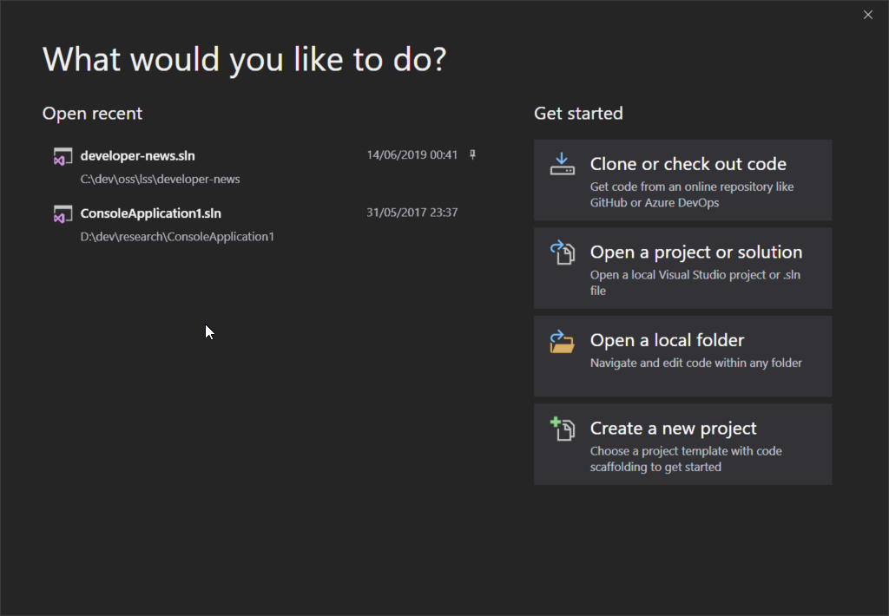
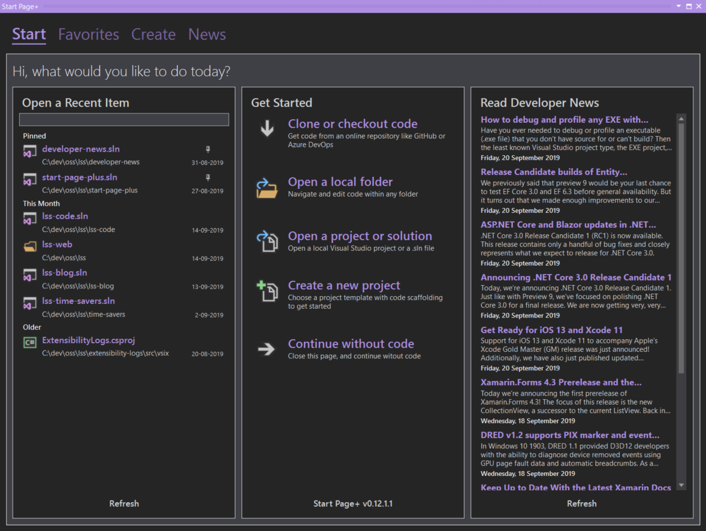

Overview
Bring back Start Page+!


You can download this extension from the Visual Studio Marketplace
Please understand that this is a preview release.
While the features of the Start Tab are functional in this preview (I'm using it myself), there are still some quirks that need to be ironed out, plus a number of missing features that still need to be added. I just wanted to get this up to the marketplace as quickly as I could, so people can see it and start to use it.
Feedback is welcome, however don't add your ideas and/or feeback to any forum post where you might have discovered Start Page+, please use the GitHub Issues page. I won't be able to address your feedback in any forum posts, as it's not fair to people to have posts highjacked.
Please consult the Roadmap page, or the GitHub Issues page before you add an issue for new features, feature enhancements etc. If you don't see your desired feature or enhancement mentioned on the website, then by all means go ahead and add an issue for it.
Please consult the Start Page+ website's Known Issues page, or the GitHub Issues page before adding issues for any bugs you may have discovered. Duplicate issues just waste everyone's time.
The Favorites tab, the Create tab, and the News tab are still being worked on.
Bring Back Start Page!¶
When Visual Studio 2019 was released, many developers were dismayed to find that the Start Page had been completely replaced by the new Start Window (a big modal dialog window, with no room for Developer News).

Introducing Start Page+¶
So many of you, in so many posts in the Developer Community forum, pleaded for Microsoft to bring back the Visual Studio 2017 Start Page, and unfortunately those pleas have fallen on deaf ears.
Well, you asked and now Start Page+ delivers!
The Start Page+ extension adds a new start page that is a dockable tool window, not a modal window. It's been written from the ground up, and doesn't rely on any of Visual Studio's internal code. So it can't be taken away by Microsoft. And it's open source!
To open the new Start Page+ window:
-
make sure Visual Studio's Start Window is disabled
- in Tools | Options | Environment | Startup select Empty Environment

-
click on View | Start Page+

The Start Page+ window is accessed from the View menu, because it makes sense. It's also easy to remember because you think "I want to view the start page", you don't think "I want to file the start page.
The Visual Studio 2010-2017's Start Page was always in the View menu, until Microsoft moved it to the File menu in later versions of VS 2017, and then permanently in VS 2019, which never really made any sense.
Support the Project¶
If Start Page+ has saved you time and hassle, please come back and show your support:
- you could rate Start Page+ (only takes a couple of seconds)
- or review Start Page+ (help others benefit from your experience)
- or shout me a coke (I don't drink coffee or beer lol)